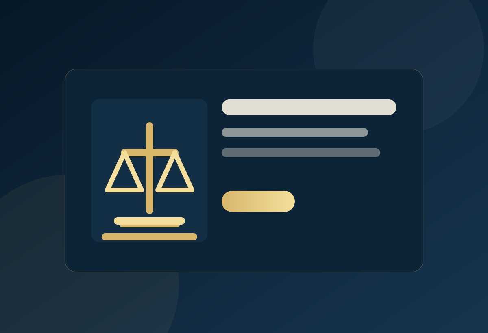

Abogado para capturas en Bogotá
Acompañamiento legal urgente cuando una persona fue capturada, trasladada a URI, estación de policía o requiere defensa en audiencia inmediata.
Ver landing →Asesoría y representación penal para personas investigadas, acusadas, víctimas o familiares que necesitan una estrategia clara desde el primer momento.

Esta landing está enfocada en captar usuarios con intención específica y llevarlos a una acción clara.
Un caso penal no se resuelve con respuestas genéricas. Requiere revisar hechos, pruebas, comunicaciones, antecedentes del conflicto y etapa procesal. La estrategia debe construirse con orden, reserva y criterio técnico.
Respuestas de orientación general para mejorar la conversión sin sustituir asesoría jurídica individual.
Cuando exista una denuncia, citación, captura, investigación, audiencia o cualquier situación que pueda comprometer su libertad, antecedentes, patrimonio o tranquilidad. Mientras más temprano se revise el caso, más margen hay para definir una estrategia.
Conserve la calma, confirme dónde se encuentra, evite que rinda declaraciones sin asesoría y contacte a un abogado penalista para revisar la legalidad de la captura y preparar la audiencia correspondiente.
Una citación puede corresponder a una entrevista, diligencia, conciliación o etapa procesal específica. Antes de asistir conviene revisar el motivo de la citación, el número de noticia criminal y los posibles riesgos.
Sí. La página está pensada para captar solicitudes urgentes relacionadas con capturas, audiencias, citaciones, denuncias recientes y situaciones donde se necesita orientación rápida.
Sí. Es posible revisar la denuncia, la etapa del proceso, los hechos, los elementos probatorios y las alternativas de defensa disponibles para el caso concreto.
Sí. Un abogado penalista puede acompañar a víctimas en la presentación de denuncias, solicitud de medidas, seguimiento del proceso y participación en audiencias.
Enlazado interno para mejorar SEO y navegación del usuario.
Acompañamiento legal urgente cuando una persona fue capturada, trasladada a URI, estación de policía o requiere defensa en audiencia inmediata.
Ver landing →Preparación y representación en audiencias penales, con revisión de expediente, riesgos, argumentos, pruebas y posibles escenarios procesales.
Ver landing →Acompañamiento a víctimas para evaluar hechos, organizar pruebas, presentar denuncia y hacer seguimiento jurídico del proceso.
Ver landing →Comparta los hechos principales y reciba orientación sobre los próximos pasos posibles.